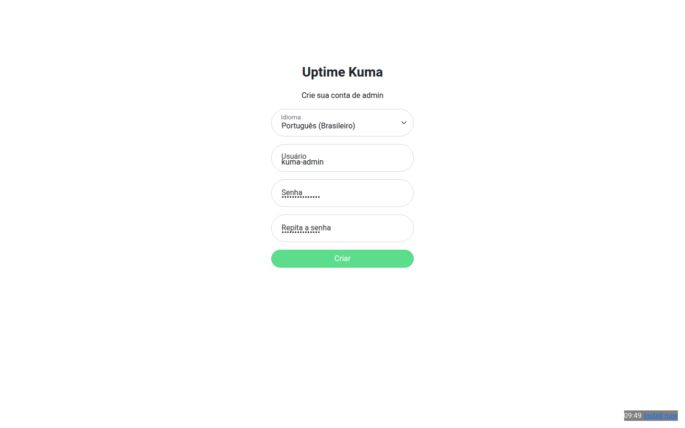
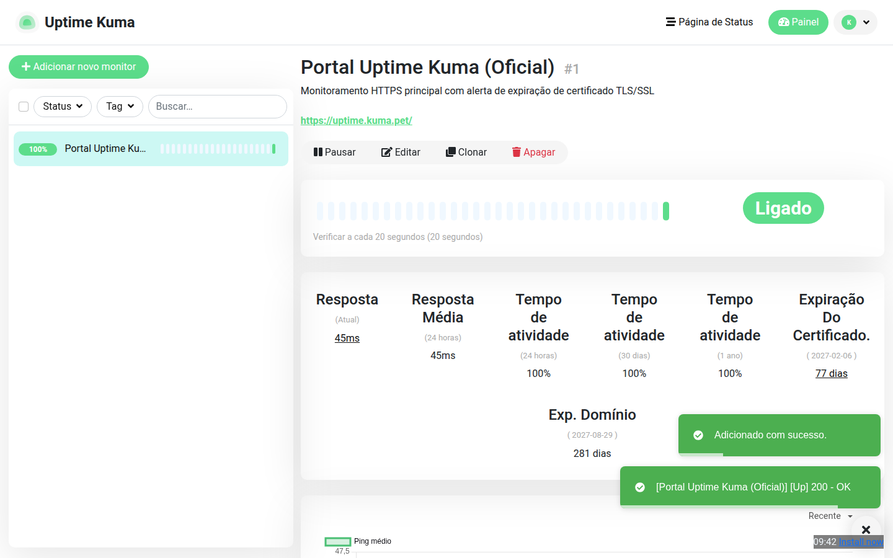
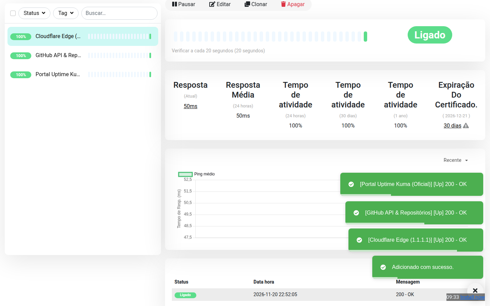
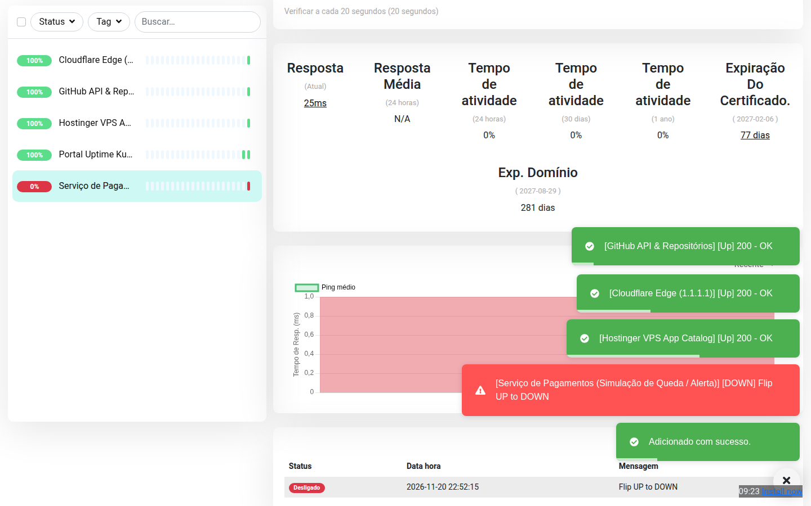
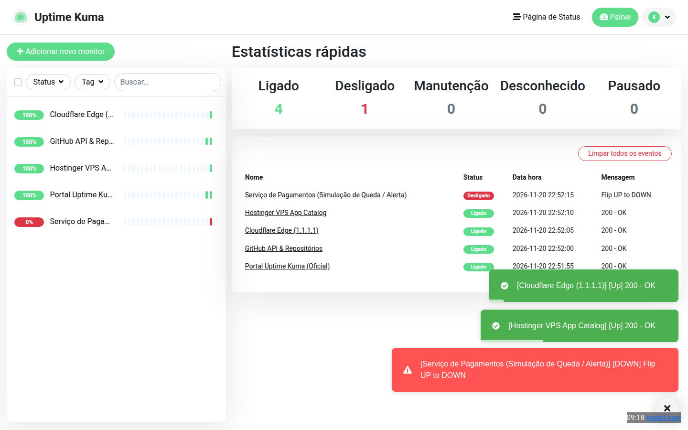
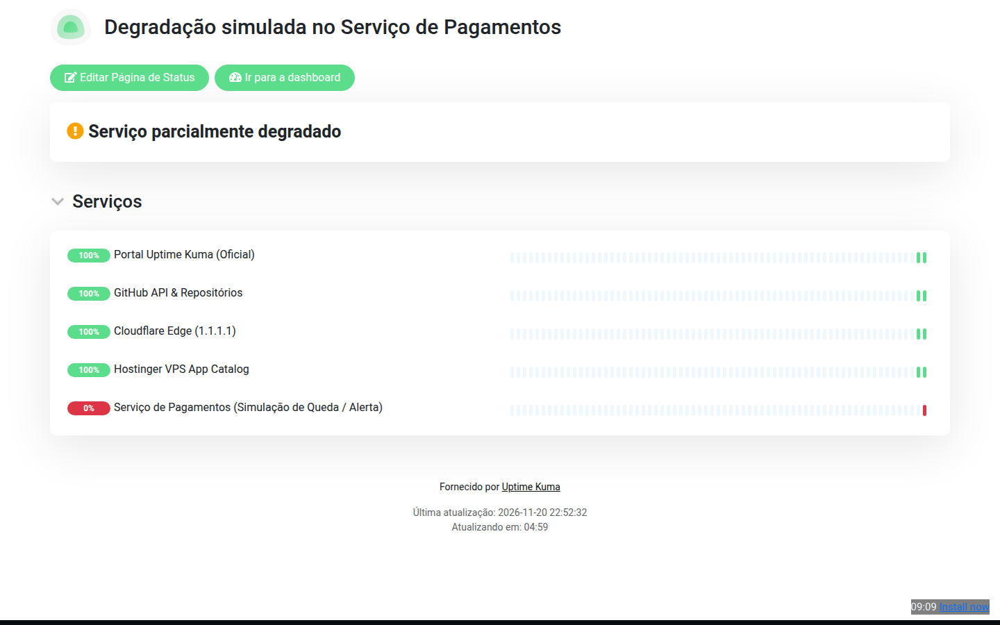

1. Inicialização & Conta Administrativa
Configuração automática do banco SQLite e criação do usuário kuma-admin dentro do container isolado do demo.
Como a instância de demonstração oficial (https://demo.kuma.pet/start-demo) inicia completamente vazia,
este agente automatizado via Playwright acessou o ambiente com as credenciais kuma-admin,
configurou o banco SQLite, criou 5 monitores reais (incluindo verificação SSL e simulação de queda/incidente),
validou os gráficos de heartbeat e publicou uma Página de Status Pública.
Checa HTTP(s), palavras-chave na página, JSON Query, TCP, Ping, DNS, Docker containers, PostgreSQL/MySQL/Redis e Push.
Barras coloridas de histórico imediato via WebSocket, tempo de resposta em milissegundos (ping médio/mín/máx) e % de uptime (24h / 30d).
Notifica quedas e recuperação em +90 canais (Telegram, Discord, Slack, E-mail, Webhook, WhatsApp/Evolution) e avisa vencimento de SSL.
Cria portais limpos (ex: /status/infra) agrupando serviços para clientes ou equipes acompanharem incidentes e manutenções.
| Monitor Criado | Alvo / URL | Intervalo | Recursos Demonstrados | Estado Validado |
|---|---|---|---|---|
| Carregando relatório... | ||||

Configuração automática do banco SQLite e criação do usuário kuma-admin dentro do container isolado do demo.

Exibe o status Online (UP), gráfico de latência em milissegundos, informações do certificado TLS e histórico de heartbeats.

Acompanhamento simultâneo da API do GitHub e Cloudflare Edge (1.1.1.1) com barras de disponibilidade lado a lado.

Demonstra como o Uptime Kuma sinaliza falhas em vermelho, contabiliza indisponibilidade e dispara alertas imediatos.

Visão executiva com total de monitores Online, Offline, em Manutenção, Pausados e log recente de eventos.

/status/infra)Portal público customizável onde usuários finais visualizam a saúde agregada de cada grupo de serviços sem fazer login.
Para ver o agente interagindo ao vivo no seu navegador (abrindo o Chromium e preenchendo tudo na sua frente em tempo real):
/opt/dev-projects/GREENYARD-AI-NFL-VALUE-BETTING-ENGINE/backend/.venv/bin/python3 \
demos/uptime-kuma/scripts/run_kuma_demo.py --headed --hold 120| Etapa | Status | Detalhes |
|---|---|---|
| Carregando etapas... | ||